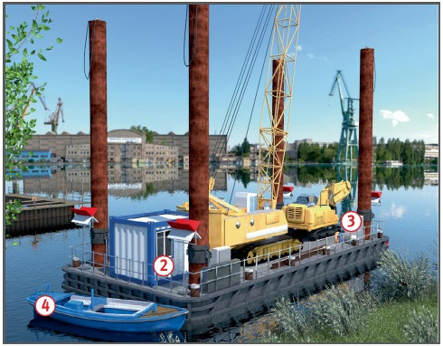

Wenn bei schwimmenden
Geräten keine ausreichende
Schwimmfähigkeit und Kentersicherheit besteht, kann es zum
Ertrinken von Personen kommen
oder zu tödlichen/schweren
Verletzungen durch Umsturz von
Arbeitsmaschinen auf schwimmenden
Geräten.
Allgemeines
Beim Einsatz auf Bundeswasserstraßen ist eine gültige
Verkehrszulassung vorzuhalten.
Darauf achten, dass gekrängte
und getrimmte Schiffskörper
nicht tiefer als die an den Außenseiten angebrachten Sicherheitsmarken
eintauchen .
Der Sicherheitsabstand
zwischen Wasseroberfläche und
Oberkante Bordwand beträgt
mindestens 300 mm, auf witterungsgefährdeten
oder schnell
fließenden Binnengewässern mindestens 500 mm. Der Neigungswinkel
der Schwimmkörper
darf nicht mehr als 5° betragen.
Stoß- und Stolperstellen sowie Öffnungen an Deck kennzeichnen bzw. abdecken. Decks, Verkehrswege, Laufstege, Podeste und Pollerdeckel müssen rutschsicher sein.
Verkehrswege an Deck nicht durch Maschinen, Geräte oder Material verstellen. Gangborde und Laufgänge müssen mindestens eine lichte Breite von 0,50 m, im Bereich von Pollern, Klampen und Stützen von 0,30 m haben.
Zwischen beweglichen Teilen
von Arbeitseinrichtungen und
festen Teilen des Wasserfahrzeuges ist ein Mindestabstand
von 0,50 m einzuhalten.
Alle Wasserfahrzeuge sind entsprechend
Polizeiverordnung
(PVO) tags und nachts zu kennzeichnen
und mit mindestens
einer Generalalarmanlage auszurüsten.
Bewegliche Teile von Hebezeugen, Fördergeräten, Arbeitsmaschinen
und Arbeitsbühnen
bei Überführungsfahrten gegen
Losschlagen, Verschieben und
Verrutschen sichern.
Die Festigkeit des Wasserfahrzeuges
muss die zu erwartenden
Belastungen aufnehmen können.
Feuerlöscheinrichtungen, z. B.
Feuerlöscher, gut erreichbar anbringen.
Schutzmaßnahmen
Nur schwimmende Geräte
einsetzen, bei denen Schwimmfähigkeit
und Kentersicherheit
rechnerisch nachgewiesen und
von einem Sachverständigen
geprüft wurden.
Zusammenfassung der Ergebnisse
der geprüften Stabilitätsberechnung
an der Verwendungsstelle
vorhalten, Mitarbeiter
sind über die Ergebnisse zu
unterweisen.
Kanten von Decks durch feste
Geländer (Relinge), Schanzkleider oder klapp- bzw. losnehmbare
Geländer sichern.
Sie dürfen nur in den Bereichen
fehlen, in denen der Betrieb
ständig behindert wird .
Zum Erreichen und Verlassen
der schwimmenden Geräte Laufstege
nach DIN EN 14206 mit
mindestens einseitigem Geländer
benutzen oder Beiboot benutzen .
In Fahrgewässern Vorkehrungen
treffen gegen:
Wellschlag (Schwell),
Anfahren gegen Abspann- und
Verholseile, z. B. durch Warn- und Verbotsschilder, Bojen.
Bei verfahrbaren Arbeitsmitteln
sind Einrichtungen zur Fahrbahnbegrenzung
zu schaffen.
Das Kollisionsschott und das Heckschott sind dicht zu fahren.
Bei länger geschlossenen Unterdecksräumen darauf achten, dass bei Begehungen vorher der Sauerstoffgehalt der Atemluft unter Deck gemessen wird.
Einstiegluken und Eingänge,
die im Dreh- und Fahrbereich
des Oberwagens von Hebezeugen, Fördergeräten und Arbeitsmaschinen
liegen, während
des Betriebes nicht betreten.
Keine festsitzenden Lasten mit
Hebezeugen, Fördergeräten und
Arbeitsmaschinen losreißen,
Lasten nicht schräg ziehen.
Ausnahme: Bewegliche Ausleger
werden gegen Zurückschlagen
gesichert und die Arbeiten
werden durch den Vorgesetzten
beaufsichtigt.
An Bord von schwimmenden
Geräten Rettungswesten gemäß
DIN EN ISO 12402 bereit halten
und bei Bedarf anlegen.
Rettungsgeräte, z. B. Rettungsringe
, Rettungsinsel,
Rettungsboot, bereithalten.

Zusätzliche Hinweise für
Aufsicht und Geräteführer
Schwimmende Geräte dürfen
nur unter Aufsicht eines Aufsichtführenden
und von zuverlässigen
Geräteführern bedient
werden.
Aufsichtführende und Geräteführer
sind vom Unternehmer
schriftlich zu beauftragen und
über Gefährdungen und erforderliche
Schutzmaßnahmen zu
unterweisen (Dokumentation).
Bei Überführungsfahrten muss
der Schiffsführer die entsprechende
Berechtigung (Patent)
haben.
Zusätzliche Hinweise für Bedienung
Schwimmende Geräte dürfen
nur von Personen bedient und
gewartet werden, die sachkundig
sind und von denen zu erwarten
ist, dass sie ihre Aufgaben zuverlässig erfüllen.
Mindestens eine Person der
Besatzung muss mit dem Gewässer,
auf dem das Gerät eingesetzt
ist, vertraut sein.
Prüfungen
Schwimmende Geräte und
darauf verbrachte Hebezeuge,
Fördergeräte und Arbeitsmaschinen
nach Bedarf, i.d.R. einmal
jährlich von einer „zur Prüfung
befähigten Person“ (z. B. Sachkundigem)
prüfen lassen.
Schwimmende Geräte mit
Hebezeugen, Löffel- und Greifbaggern
sind vor der ersten Inbetriebnahme
und nach Umbauten
durch eine „zur Prüfung befähigte
Person“ zu kontrollieren.
Ergebnisse der Prüfungen
durch „zur Prüfung befähigte
Personen“ (Sachkundige/Sachverständige) sind zu dokumentieren
und bis zur nächsten
Prüfung aufzubewahren.
Schwimmende Geräte sind
beim Einsatz auf Bundeswasserstraßen
vor dem Ersteinsatz und
dann in regelmäßigen Abständen
von einer Schiffsuntersuchungskommission
(SUK) zu prüfen. Die
Abstände der Nachfolgeprüfungen
werden durch die Kommission
festgelegt.
Anker- und Verholseile oder
-ketten regelmäßig auf Mängel
überprüfen, z. B. Draht- und
Litzenbrüche, Rostfraß, Abnutzung, Quetschstellen.